Data Validation
Validating data directly in the terminal with the Pointblank CLI offers a fast, scriptable, and repeatable way to check your data. This approach is especially useful for quick checks, CI/CD pipelines, and automation workflows, where you want immediate feedback and clear pass/fail results.
The CLI commands are designed for efficiency: you can run validations with a single line, integrate them easily into shell scripts or data pipelines, and benefit from clear, color-coded output that’s easy to interpret at a glance.
The pb validate command lets you perform common validation checks directly on your data source with a simple command-line interface. This works well both for quick, one-off checks and for use in automated pipelines.
For more complex validation logic, the pb run command serves as a runner for validation scripts written with the Pointblank Python API, allowing you to execute custom validation workflows from the command line.
pb validate: Quick, One-Line Data Checks
The pb validate command is your go-to for running common validation checks directly on your data source. It’s perfect for quick, one-off checks or for use in automated pipelines. You specify exactly which check you want to run using the --check option, making your intent clear and your validation explicit.
Here’s how you construct a validation command:
pb validate worldcities.csv --check <check-name> [other options]You always provide the data source first, then specify one or more checks with --check. Each check can have its own options, such as --column or --value, depending on what you want to validate.
Checking for Duplicate and Complete Rows
To check for duplicate rows, use the rows-distinct check:
pb validate worldcities.csv --check rows-distinct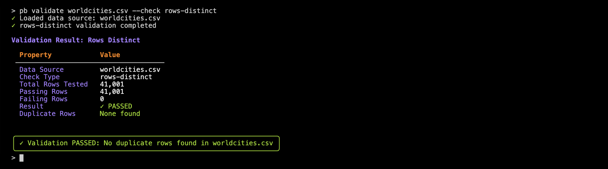
The output shows you whether your data contains any duplicate rows, how many rows were checked, and if any duplicates were found. The color-coding of the results helps you quickly interpret the results, using green for pass and red for fail. Here, no duplicate rows were detected out of the 41K rows checked.
To check that every row is complete (i.e., no missing values in any column), use the rows-complete check:
pb validate worldcities.csv --check rows-complete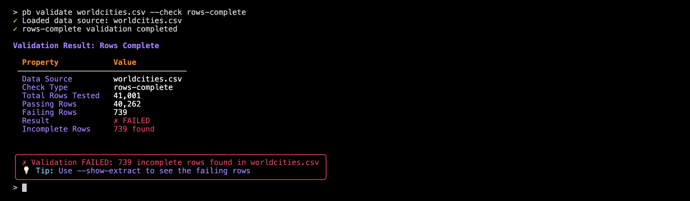
With this check we see that the worldcities.csv dataset has 739 rows containing at least one Null/missing value. And with any dataset, it’s easy to quickly spot if there are any rows with missing data using this command.
Checking for Nulls and Value Ranges
You can easily check for missing values in a column, or ensure that values fall within a certain range. Here’s how to check that all values in the population column are not null:
pb validate worldcities.csv --check col-vals-not-null --column city_name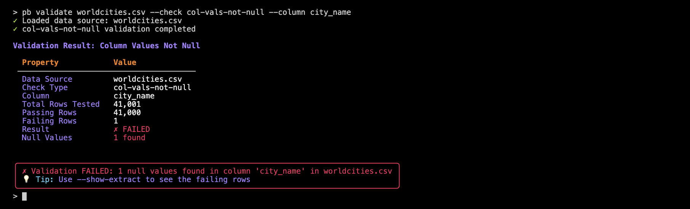
Perhaps surprisingly, we find that one row has a missing city name.
Let’s now check whether all values in the population column are greater than zero:
pb validate worldcities.csv --check col-vals-gt --column population --value 0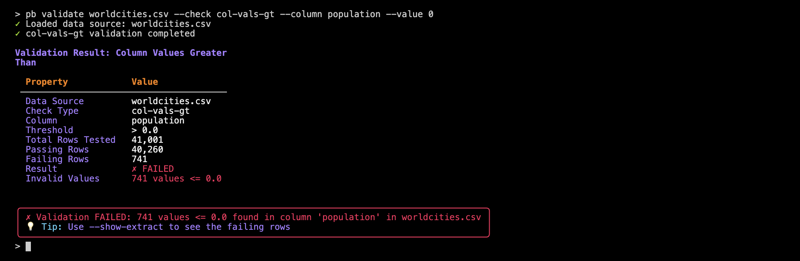
With that we find that there are 741 rows where the population value is not greater than 0 (note that this check also fails when cells are null or missing).
Multiple Checks in One Command
You can chain several checks together in a single command. This is handy for comprehensive data quality checks:
pb validate worldcities.csv --check rows-distinct --check col-vals-not-null --column city_name --check col-vals-gt --column population --value 0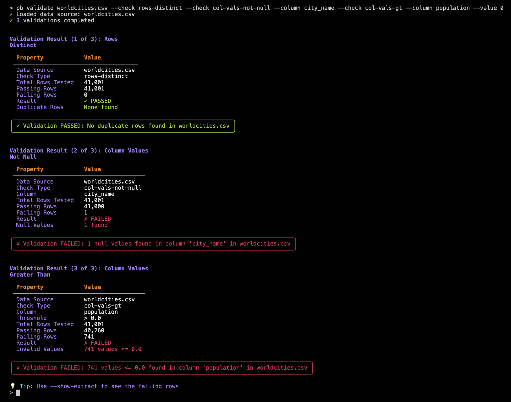
Each check is shown one after the other in the terminal output, so you can review the result of each validation step individually as the command proceeds.
Seeing and Saving Failing Rows
If a check fails, you might want to see which rows caused the failure. Use the --show-extract option to display failing rows right in the terminal:
pb validate worldcities.csv --check rows-complete --show-extract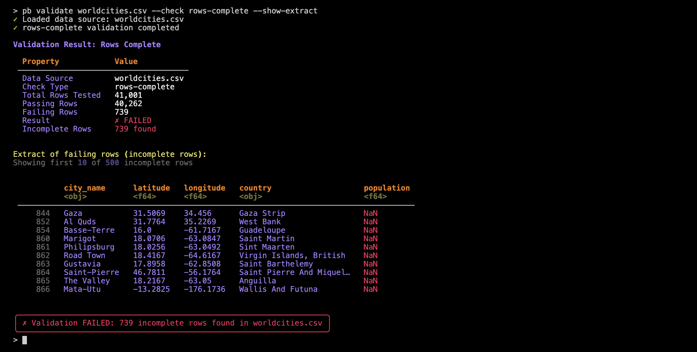
Or, save the failing rows to a CSV file for further investigation:
pb validate worldcities.csv --check rows-complete --show-extract --write-extract incomplete_failing_rows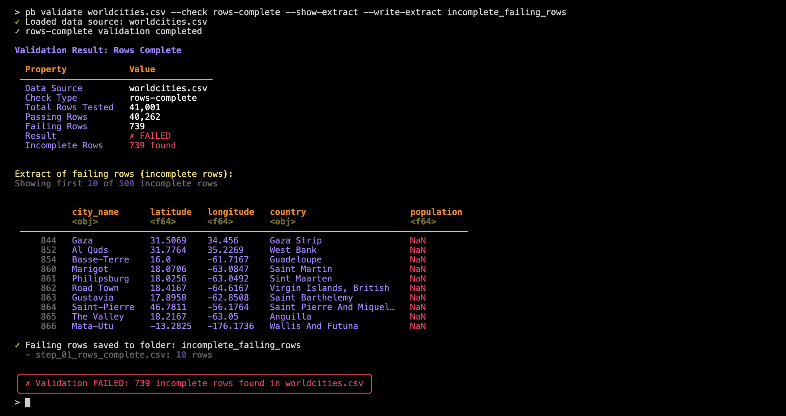
Note here in the output the additional lines stating that failing rows were saved to a folder (incomplete_failing_rows) and, within that folder the step_01_rows_complete.csv file was written. Using a folder for extracts is necessary in practice since there may be multiple validations defined in a pb validate command.
Advanced Options and CI/CD Integration
- use
--exit-codeto make the command exit with a non-zero code if any check fails; useful for CI/CD pipelines - use
--limitto control how many failing rows are shown or saved - use
--list-checksto see all available validation checks and their options
pb validate worldcities.csv --check col-vals-not-null --column city_name --exit-code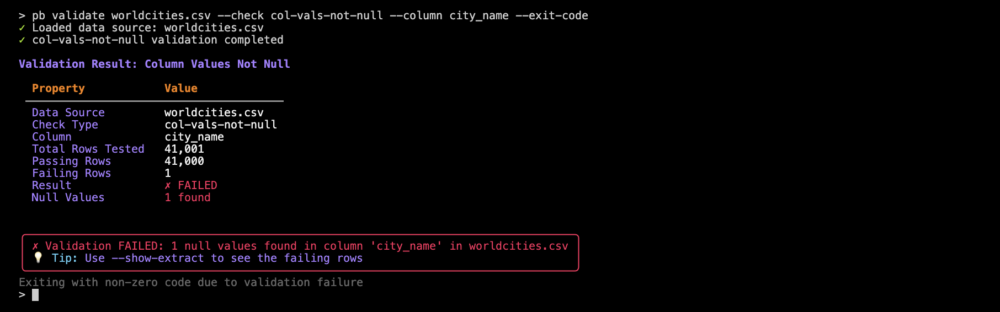
pb run: Custom Validation Workflows with Python
For more complex validation logic, use the pb run command. This lets you execute a Python script containing Pointblank validation steps, combining the flexibility of the Python API with the convenience of the CLI.
You can always scaffold a template script using the pb make-template command:
pb make-template my_validation.pyBut for our example, we’ll elect to make our own worldcities_validation.py file from scratch. It will:
- use the
worldcities.csvfile - apply two thresholds (one for ‘warning’, another for ‘error’)
- have six validation steps
Here’s what it looks like:
import pointblank as pb
validation = (
pb.Validate(
data="worldcities.csv",
thresholds=pb.Thresholds(
warning=1, # 1 failure
error=0.05, # 5% of rows failing
),
)
.col_schema_match(
schema=pb.Schema(
columns=[
("city_name", "object"),
("latitude", "float64"),
("longitude", "float64"),
("country", "object"),
("population", "float64"),
]
),
)
.col_vals_not_null(columns="city_name")
.col_vals_not_null(columns="population")
.col_vals_gt(columns="population", value=0, na_pass=True)
.col_vals_between(columns="latitude", left=-90, right=90)
.col_vals_between(columns="longitude", left=-180, right=180)
.interrogate()
)Now, we’ll run the .py script from the terminal:
pb run worldcities_validation.py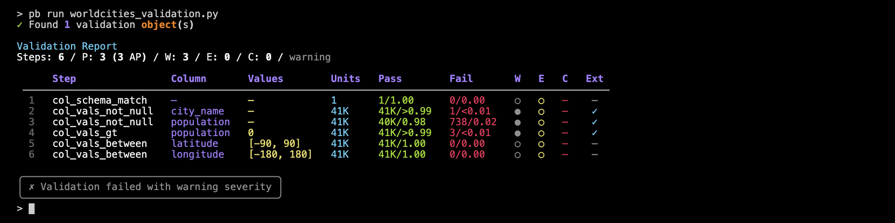
You’ll see a summary table that lists all of the steps and their results and you can include as many steps and as much logic as you need.
Output Options
You could save the validation report as HTML or JSON (or both) for the purposes of sharing or for automation:
pb run worldcities_validation.py --output-html report.html --output-json report.json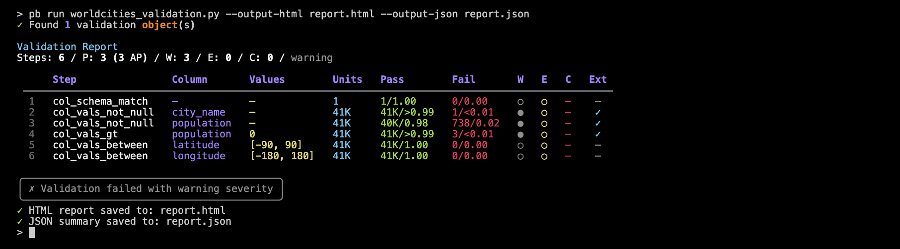
There are also the options to produce extracts (subset of failing rows) with --show-extract or --write-extract (just like with pb validate). Let’s do both in the following example:
pb run worldcities_validation.py --show-extract --write-extract worldcities_failures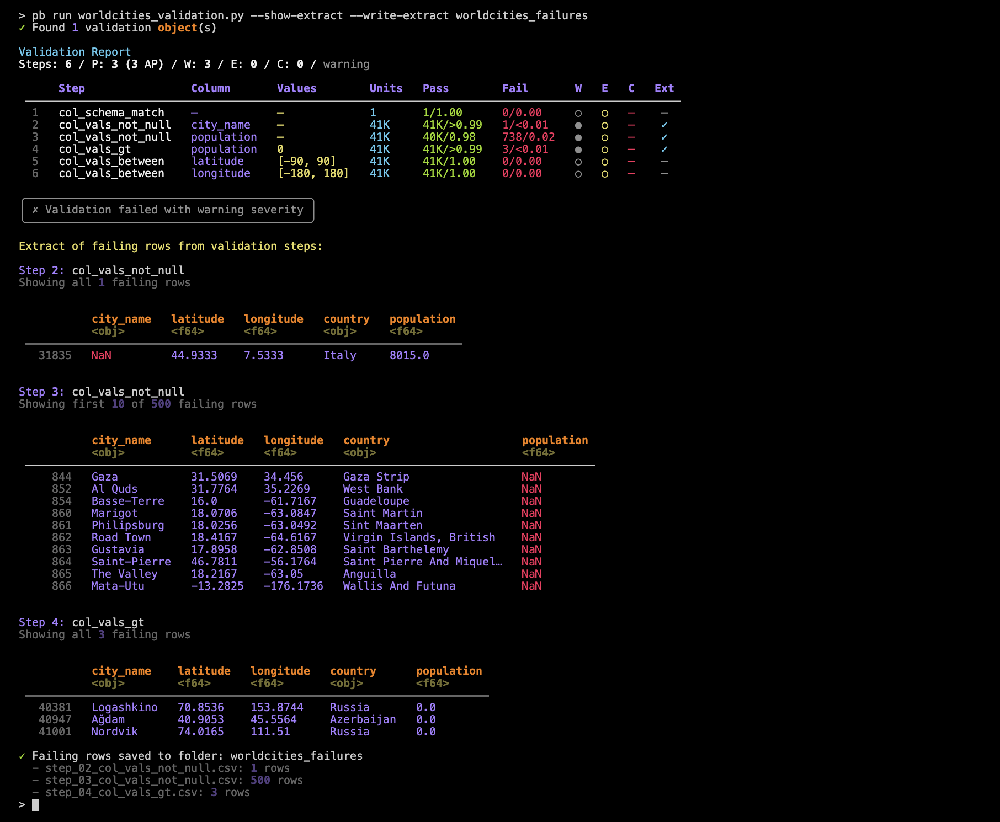
This shows a preview of each extract for those validation steps where extracts were produced (steps 2, 3, and 4). Individual CSV files with extracted rows for those steps were written to the worldcities_failures directory.
Controlling Failure Behavior
It’s possible to use the --fail-on option to control when the command should exit with an error, based on the severity of validation failures. This is especially useful for automated workflows and CI/CD pipelines.
Let’s try that with our worldcities_validation.py validation, which we’ve seen exeeds the ‘warning’ in steps 2, 3, and 4:
pb run worldcities_validation.py --fail-on warning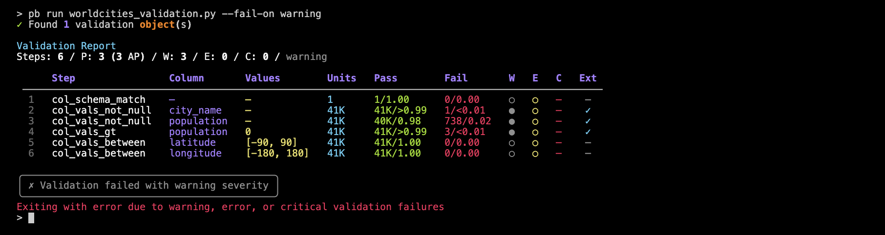
Notice the final line states Exiting with error due to warning, error, or critical validation failures. Because we applied --fail-on warning, any presence of `warning’ (or higher levels such as ‘error’ or ‘critical’) will yield a non-zero exit code that should stop a pipeline process. We can prove this by running the following lines in the terminal
pb run worldcities_validation.py --fail-on warning > /dev/null 2>&1
echo $?which returns 1.
Wrapping Up
Pointblank’s CLI gives you powerful tools for validating your data, whether you need a quick check or a custom workflow. Use pb validate for fast, one-liner checks and pb run for more advanced, scriptable validation logic. With clear output and flexible options, you can catch data issues early and keep your workflows running smoothly.